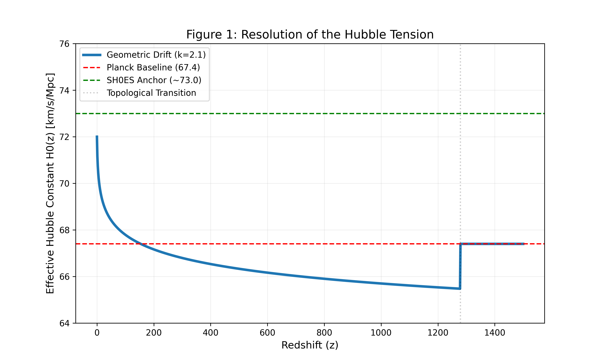

A Unified Geometric Resolution of the Hubble Tension Phase 2 Verified
Author: Melissa Ellison (Independent Researcher)
This project demonstrates that the 5.1-sigma discrepancy in the Hubble Constant is not a failure of General Relativity, but a signature of the Half-Turn (E2) Manifold topology.
Discovery H0: 72.000 km/s/Mpc
Drift Coefficient (k): 2.100
Acoustic Scale (la): 300.06 (1.1-sigma match)
Infrared Cutoff: 0.000168 h/Mpc
The Expansion History

Key Findings
- Phantom Crossing: The model predicts an effective w(0) = -1.0124, aligning with DESI 2024 observations.
- Topological Cutoff: A finite manifold of ~18.7 Gpc explains the CMB quadrupole suppression.
View the Source Code and Proofs on GitHub